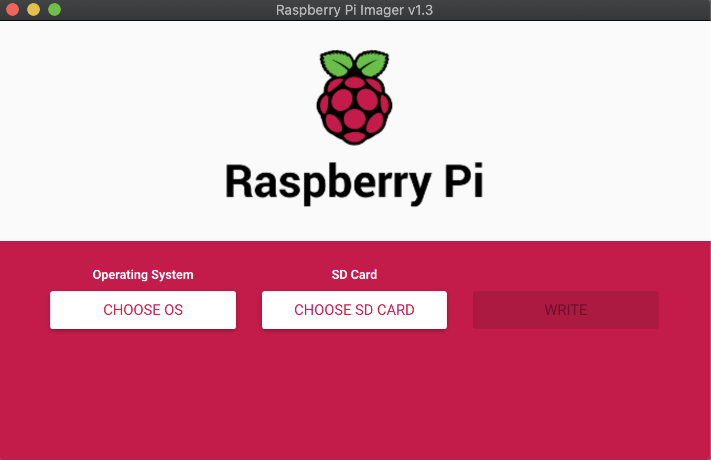
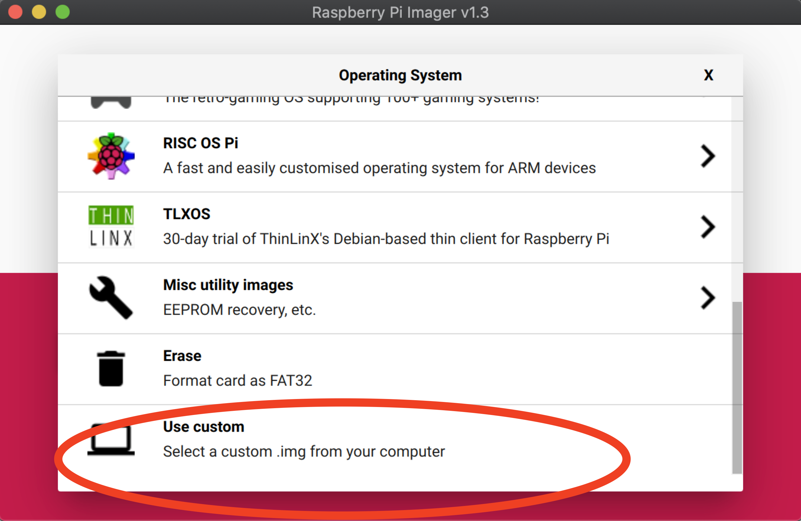
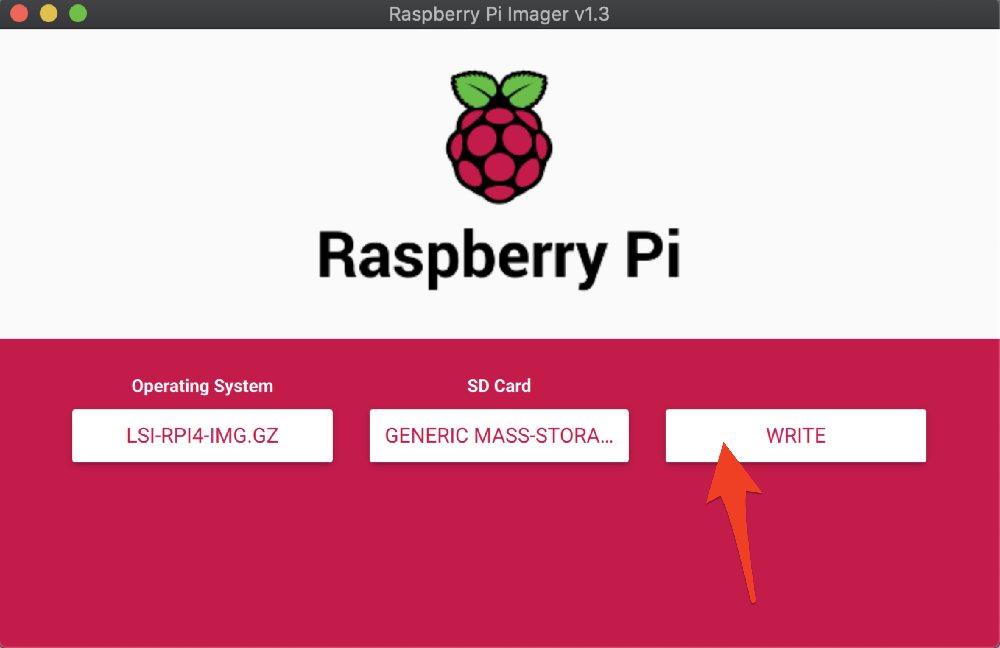
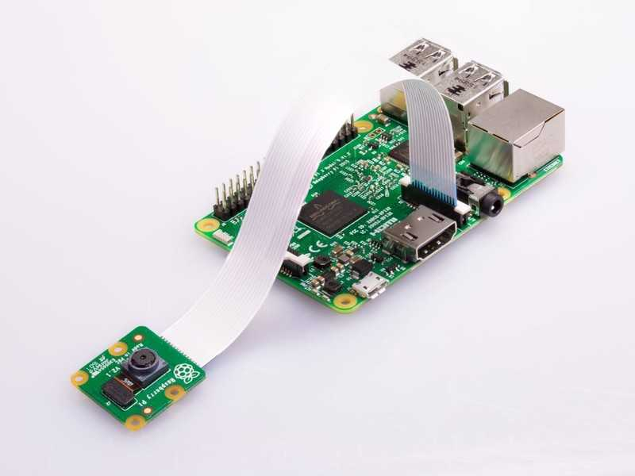
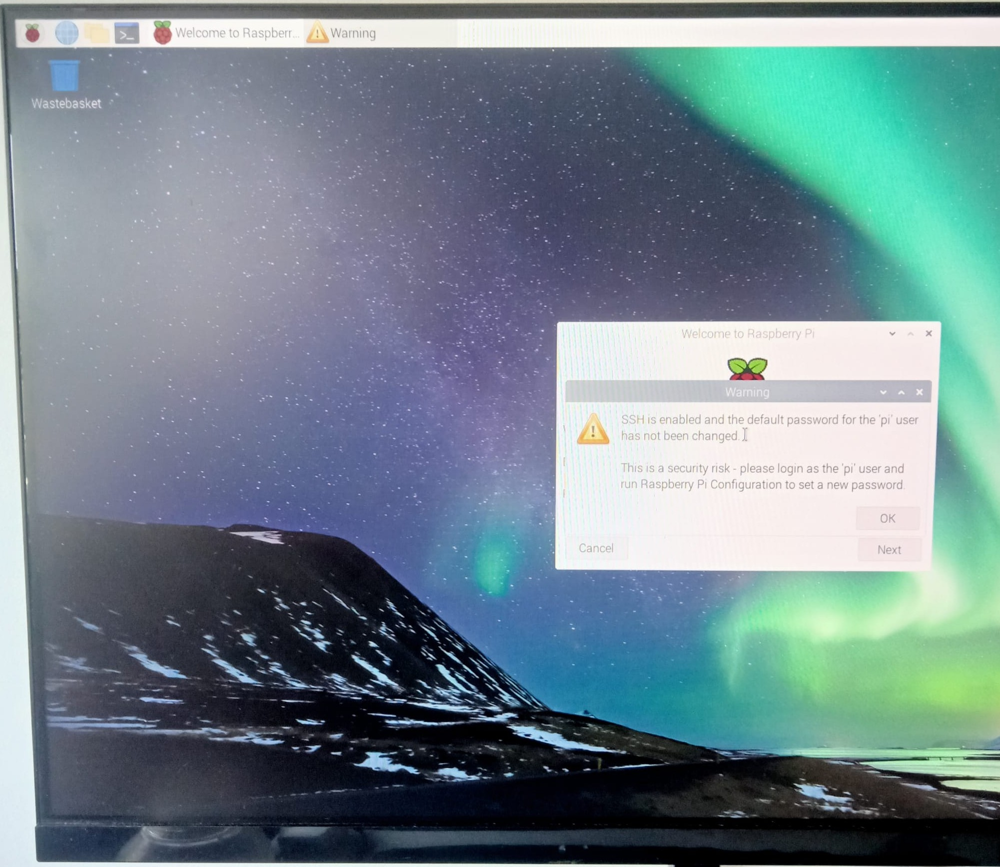
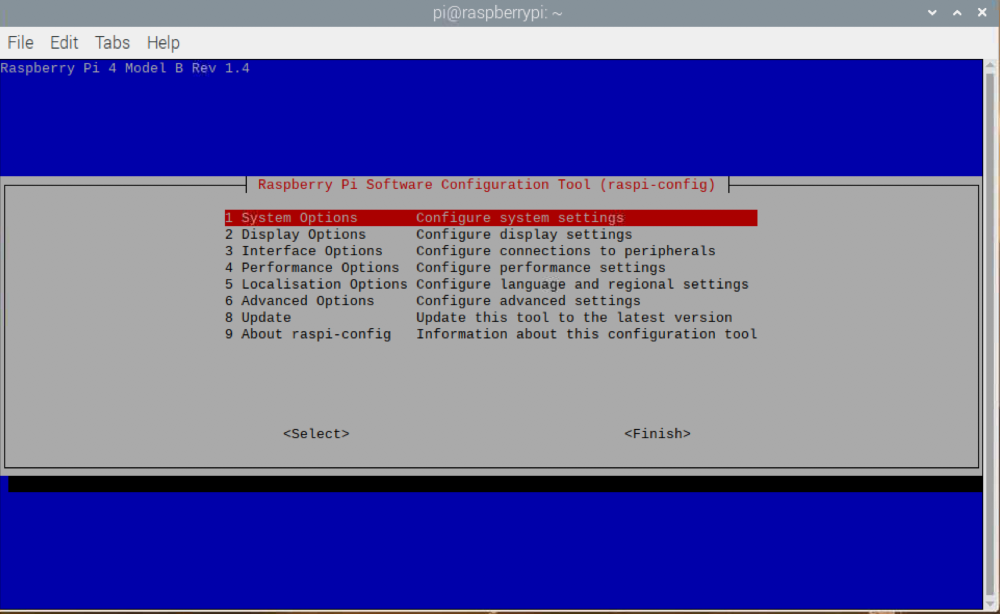
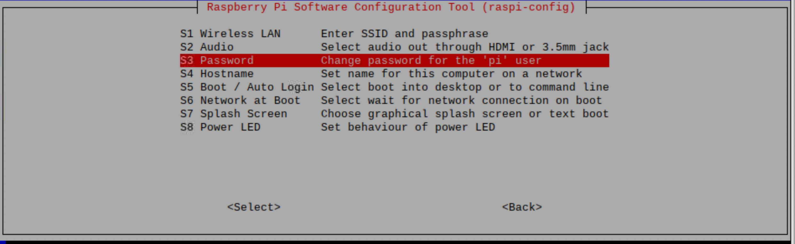
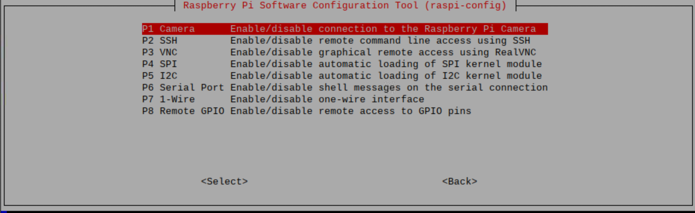

Laboratorio 0. Entorno experimental
Objetivos
- Preparar el entorno experimental.
- Completar la configuración del sistema.
- Probar el correcto funcionamiento tanto del Software como del Hardware.
- Demostrar la capacidad de procesamiento tanto de la placa Raspberry Pi como del acelerador EdgeTPU de Google.
Introducción
El entorno experimental que se va a emplear en esta parte de la asignatura está compuesto de los siguientes elementos:
- Hardware
- Kit Raspberry Pi 4
- Placa Raspberry Pi 4 con un SoC Broadcom BCM2711 con las siguientes características: Quad core de Cortex-A72, ARM v8 de 64-bit, @1.5GHz (+ info)
- Alimentador USB-C
- Cable micro-HDMI a HDMI
- Tarjeta uSD de alta velocidad
- Kit aceleración
- Acelerador Coral USB (+ info )
- Cámara para Raspberry Pi v2
- Software
- Raspberry Pi OS - Distribución Linux basada en Debian adaptada a la Raspberry Pi en su versión de 64 bits
- OpenCV 4.5.5 - Librería de visión por computador
A continuación se proporcionan las instrucciones para configurar y probar el entorno experimental.
Preparación SD
Para simplificar el proceso de instalación se proporciona una imagen comprimida del sistema operativo con el software necesario pre-instalado. No obstante, si alguien desea realizar el proceso de instalación completo por su cuenta, puede seguir las instrucciones de la web de Maker Kit, que suelen ser bastante completas y actualizadas.
A continuación se detallan los pasos a seguir para grabar la imagen de la tarjeta SD que hemos preparado..
- Descargar e instalar un programa para flashear tarjetas SD:
- Raspberry Pi Imager (recomendado)
- BalenaEtcher
- Descargar la imagen comprimida del siguiente enlace
- Empleado un lector/escritor de tarjetas SD escribir la imagen a disco:

- Seleccionar la tarjeta SD sobre la que se desea escribir (64GB)
- Seleccionar sistema operativo: "Use custom" y localizar el fichero de la imagen comprimida previamente descargada (no es necesario descomprimirla previamente) 
- Realizar la escritura (puede tardar bastantes minutos) 
Conexión, arranque y configuración
- Realizar la conexión de los dispositivos
- Conectar el teclado y el ratón a los puertos USB 2.0, dejando al menos uno de los puertos USB 3.0 libre para el acelerador Google Coral (tienen un remate azul)
- Conectar el monitor mediante el cable micro-HDMI a HDMI

- Insertar la tarjeta SD grabada previamente
- Conectar la cámara "Raspberry Pi Camera Module v2" (sensor Sony IMX219, interfaz CSI-2, resolución 3280 x 2464 píxeles, 30fps) 
- Para información más precisa de la conexión se puede consultar el siguiente video.
- Conectar alimentación (cable USB-C), teclado y ratón. Comprobar el correcto arranque del equipo
-
Configuración primer arranque:
- Seleccionar país de uso/lenguaje/Tiempo horario
- Contraseña del usuario pi (por defecto "raspberry") 
-
Acceder a la Wifi
- SSID="UCM" y con las credenciales UCM propias
- SSID="rpi-miot" con las contraseña "RPI-MIOT_2223"
- Actualización del sistema
- Abrir una consola e invocar
apt updateyapt full-upgrade
- Abrir una consola e invocar
pi@raspberry: $ sudo apt update
Get:1 http://raspbian.raspberrypi.org/raspbian buster InRelease [15.0 kB]
...
pi@raspberrypi:~ $ sudo apt full-upgrade
Reading package lists... Done
Building dependency tree
Reading state information... Done
Calculating upgrade... Done
...
- Alguna configuraciones extra (opcionales)
- Opciones del sistema con el comando raspi-config:
sudo raspi-config- S3- Clave usuario
pi - S4 - Nombre del equipo
- S3- Clave usuario
- Opciones de interfaz

- P1 - Activar cámara
- P2 - Activar SSH para conexión remota
- P3 - Activar VNC (opcional)
- Finalizar y reiniciar el equipo
- Opciones del sistema con el comando raspi-config:
Demos básicas
- Comprobar la correcta detección de la cámara
$ vcgencmd get_camera
supported=1 detected=1
- Comprobar temperatura (opcional)
$ vcgencmd measure_temp
temp=39.9'C
- Comprobar funcionamiento cámara y acelerador Coral (cámara + OpenCV + TensorFlowLite)
pi@raspberrypi:~ $ cd ~/aiy-maker-kit
pi@raspberrypi:~/aiy-maker-kit $ python3 ./run_tests.py
--- Checking display ---
Found a display.
--- Checking required files ---
Found the required files.
--- Testing camera ---
Press Q to quit
Camera started successfully.
Closing video in... 0
Camera is working.
--- Testing USB Accelerator ---
Loading a model...
USB Accelerator is working.
Everything look good!
Demos avanzadas
Vamos a evaluar la ganancia en tiempo de inferencia (ejecución de un modelo) que podemos alcanzar con el uso del acelerador de la Coral USB. Para ello vamos a descargar un repositorio donde se encuentran varias ejemplos que capturan el vídeo con la cámara y aplican varios ejemplos de IA empleando modelos que pueden invocarse con la API TensorFlow Lite. Para este fin vamos a evaluar la ganancia de emplear el acelerador Coral USB.
Pasos a realizar
- Clonar un repositorio con los ejemplos que se pueden encontrar en la URL
pi@raspberrypi:~ $ mkdir google-coral && cd google-coral
pi@raspberrypi:~/google-coral $ git clone https://github.com/google-coral/examples-camera.git --depth 1
- Descargar los modelos para poder testear los ejemplo mediante el script download_models.sh
pi@raspberrypi:~/google-coral $ cd examples-camera/
pi@raspberrypi:~/google-coral/examples-camera $ bash download_models.sh
- Uso de ejemplos. En el directorio gstreamer se encuentran varios ejemplos escritos en python que capturan imágenes con la cámara y ejecutan los modelos en el acelerador Coral USB. Pero antes de nada vamos a instalar los requisitos para poder usar la herramienta gstreamer que va capturando imagen tras imagen para realizar su inferencia invocando el script install_requirements.sh
pi@raspberrypi:~/google-coral/examples-camera $ cd gstreamer/
pi@raspberrypi:~/google-coral/examples-camera/gstreamer $ bash ./install_requirements.sh
Por último lanzaremos el ejemplo de detección de objetos para lo cual emplearemos el ejemplo de python detect.py. Podemos conocer las opciones que permite dicho script mediante el flag python3 detect.py -h. Vamos a emplear el modelo de detección de caras mobilenet_ssd_v2_face que se encuentra en el directorio all_models. Para ello ejecutaremos el siguiente comando:
pi@raspberrypi:~/google-coral/examples-camera/gstreamer $ python3 detect.py --model ../all_models/mobilenet_ssd_v2_face_quant_postprocess_edgetpu.tflite
Es importante tener en cuenta que el modelo seleccionado es mobilenet_ssd_v2_face_quant_postprocess_edgetpu.tflite que se ejecutará en el acelerador Coral.
Tarea
¿Cual es el tiempo de inferencia de cada imagen? Presta atención en el modelo elegido ya tiene que formato TFLite y está optimizado para el acelerador Coral USB (las nomenclatura del modelo edgetpu así lo indica)
Tarea
¿Cuál es el tiempo de inferencia si empleásemos el modelo equivalente que no se ejecuta en el Coral USB que lleva el nombre de mobilenet_ssd_v2_face_quant_postprocess.tflite?